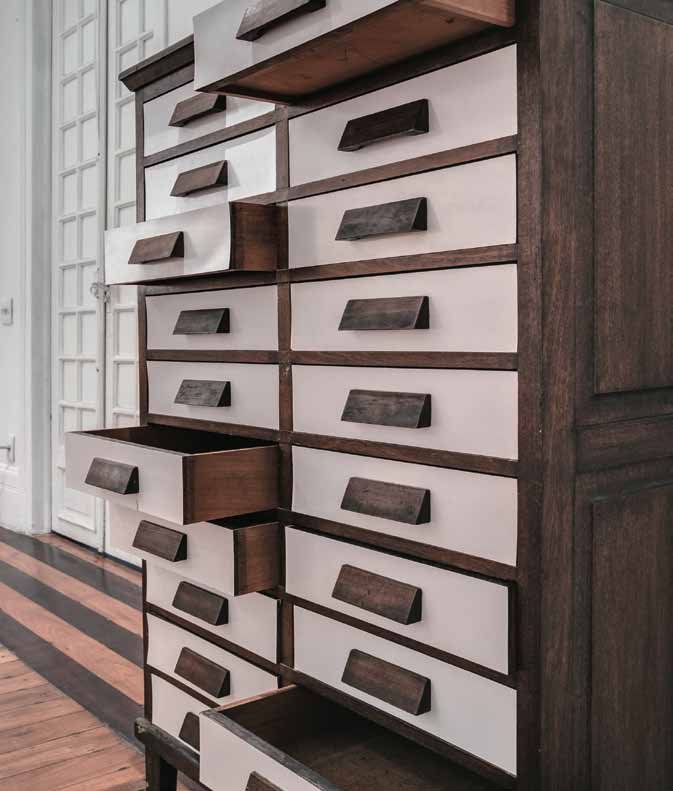
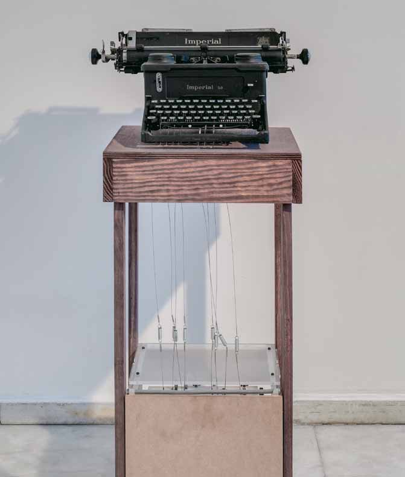
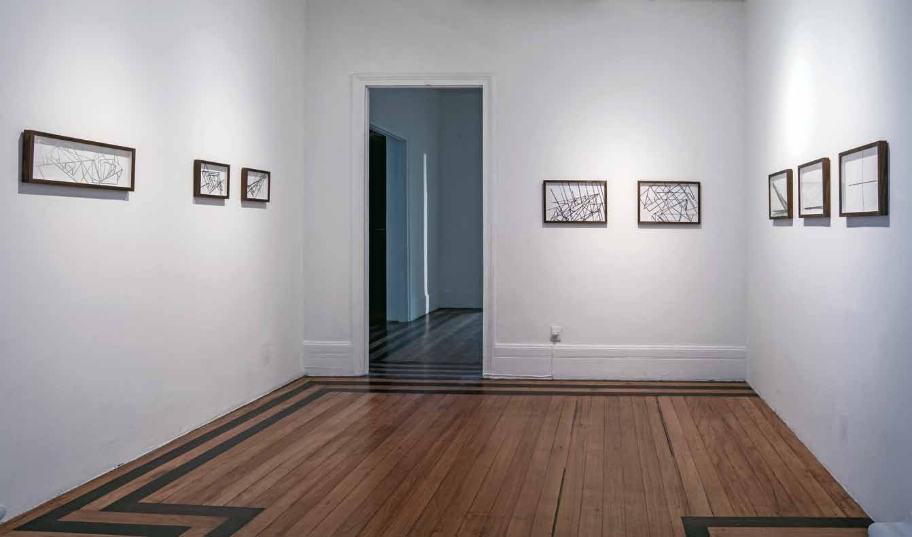

Sonar
Solo exhibition at Casa de Cultura Laura Alvim, Rio de Janeiro, 2013, curated by Glória Ferreira. It brought together sound works and premiered the installation Turbina.
- Venue
- Casa de Cultura Laura Alvim, Rio de Janeiro
- Exhibition
- Sonar (2013)



